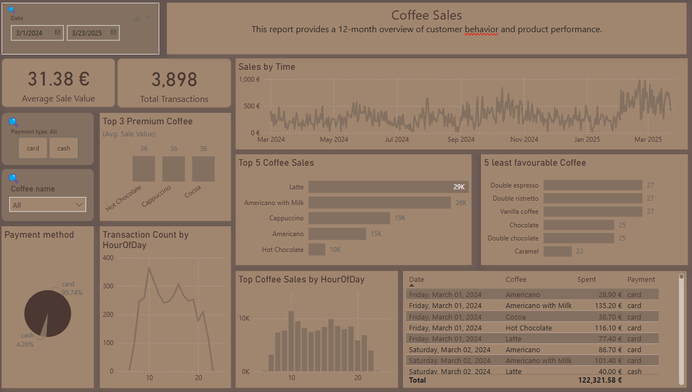

📊 Projects
📉 Netflix Global Content Analysis
This report analyzes 8,000+ Netflix titles across movies and TV shows, revealing genre trends, production hotspots, and audience patterns.
🔗 View on GitHub 📄 Download PDF

☕ Coffee Sales Dashboard
This report is based on an interactive Power BI dashboard analyzing 12 months of vending machine coffee sales.
🔗 View on GitHub 📄 Download PDF 🚀 UK Startup Founders
This report analyzes the demographic and funding characteristics of startup founders in the UK.
🔗 View on GitHub 📄 Download PDF
📉 Bank Transactions Fraud Detection
This Power BI report uncovers anomalies and suspicious transaction patterns using a public bank transaction dataset. Fraud signals include balance inconsistencies, IP/device shifts, and post-debit balance increases.
🔗 View on GitHub 📄 Download PDF

🔧 Tools & Skills
- Power BI, DAX
- SQL (PostgreSQL, TablePlus)
- Data transformation & visualization
- Interactive dashboard reporting